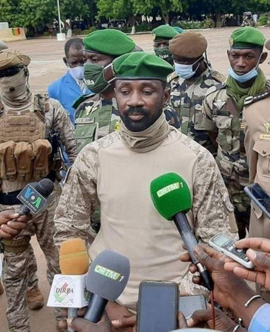
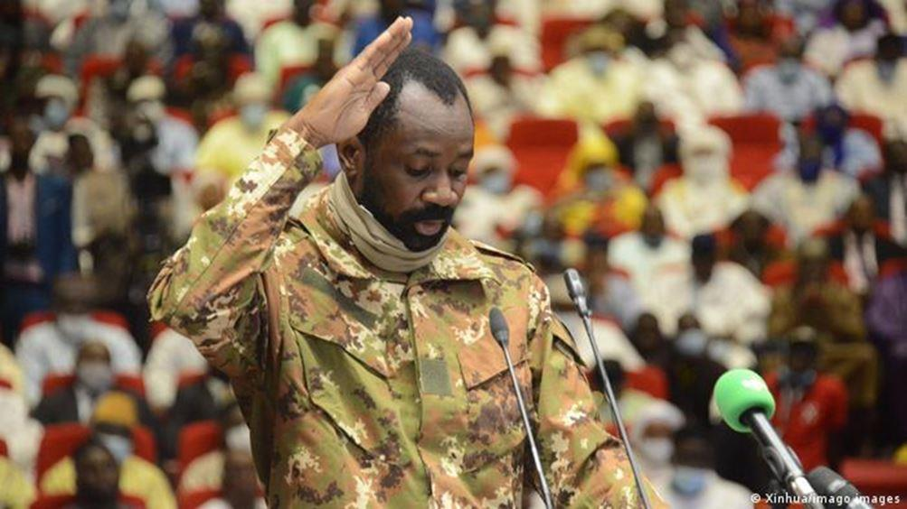

Emmanuel Macron s’enferre dans sa solitude sahélienne
par Leslie VARENNE
 Président de la transition, Assimi GoïtaDans le JDD du dimanche 30 mai, Emmanuel Macron s’est livré une nouvelle fois à des « confidences » sur l’Afrique, passant en revue tous les sujets du moment sur le continent : économie, immigration, terrorisme, gouvernance. Au milieu de cet inventaire, un passage a fait l’effet d’une torpille. S’agissant de la situation au Mali après les événements du 24 mai, il a déclaré : « (…) je ne resterai pas aux côtés d’un pays où il n’y a plus de légitimité démocratique, ni de transition » puis il a ajouté « l’islamisme radical au Mali avec nos soldats sur place ? Jamais de la vie ! Il y a aujourd’hui cette tentation au Mali. Mais si cela va dans ce sens, je me retirerai. »
À elles seules, ces deux phrases résument la politique africaine de Gribouille menée par l’Élysée. Cette politique de balancier aussi irrationnelle qu’illisible démonétise la parole de la France qui perd pied progressivement, lentement mais sûrement sur tout le continent. La décision de la Cedeao de suspendre le Mali de son organisation mais de ne pas lui imposer de sanctions économiques et d’avaliser la récente prise de pouvoir par le colonel Assimi Goïta, le prouve1.
De la légitimité…
Si les psychodrames bamakois devaient avoir quelques vertus, ce seraient celles de renvoyer le miroir des contradictions françaises en Afrique et d’être le révélateur de l’isolement diplomatique de Paris sur le continent.
Le 14 mai 2021, le Premier ministre, Moctar Ouane, présente sa démission, il est immédiatement reconduit par le président Bah Ndaw qui le charge de former un nouveau gouvernement. Dix jours plus tard, les ministres sont enfin nommés, deux des auteurs du putsch d’août 2020, le ministre de la Défense et de la Sécurité ne sont pas reconduits. Le même jour, le vice-président Assimi Goïta, aidé de ses amis officiers, démet de leurs fonctions le Président et Premier ministre et les emmènent manu-militari au camp militaire de Kati. Le 26 mai, ces derniers démissionnent et deux jours plus tard, la Cour constitutionnelle, constatant la vacance du pouvoir, rend un arrêt qui valide le remplacement du président de la transition par Assimi Goïta.
Ce « coup dans le coup » pour les uns, cette « rectification de la transition » pour les autres, a déclenché l’ire du président français, qui a subitement pris la mesure des dangers de l’absence « de légitimité démocratique » et a menacé de retirer les soldats de Barkhane. Emmanuel Macron a eu tort de s’aventurer sur le terrain de la « légitimité démocratique », c’est une pente abrupte et glissante. En Afrique francophone qui peut s’en targuer ? Les chefs d’Etat qui ont été réélus grâce à des troisièmes mandats anticonstitutionnels et/ou des scrutins non-crédibles ? Dans ces conditions, faut-il demander aux 750 hommes des Forces françaises de Côte d’Ivoire (FFCI) de partir ? Sans oublier évidemment le très récent cas d’école tchadien où le fils a remplacé illico le défunt père lors d’une passation de pouvoir anticonstitutionnelle. Une succession familiale pourtant entérinée par l’Union africaine et la France…
Les anciennes autorités maliennes de transition ne pouvaient pas non plus se prévaloir d’une quelconque légitimité démocratique : Bah Ndaw et Moctar Ouane avaient été choisis par le groupe d’officiers auteurs du putsch de 2020. Avant de se retrouver à la tête de l’État, le premier était un colonel à la retraite et le second travaillait pour des institutions internationales. Aucun des deux n’avaient donc d’activité politique qui leur aurait permis de s’appuyer sur une once de légitimité, qu’elle soit démocratique ou populaire.
D’ailleurs, et c’est assez important pour être souligné, ni leur départ, ni leur séquestration, pendant quelques jours, n’a suscité de réel mouvement de colère ou de signe d’empathie dans le pays. Cette indifférence à leur égard est à l’image de leur bilan à la tête du Mali pendant 8 mois.
Il serait tout aussi hasardeux de s’aventurer sur le terrain de la légalité, l’architecture institutionnelle mise en place en septembre 2020 étant pour le moins bancale. Elle se base à la fois sur une charte de la transition rédigée à la va-vite et sur la Constitution de 92, la première étant supérieure à la seconde, ce qui n’est pas le moindre des problèmes. Le Conseil National de Transition (CNT) chargé de voter les lois en lieu et place des députés est constitué de personnalités nommées par les militaires…
Le bon côté des choses…
Il est donc possible de lire cette « révolution de palais » de deux manières : s’insurger du culot des colonels au pouvoir, du manque de légitimité, de légalité ou de regarder le verre à moitié plein. La transition se trouvait dans une impasse et les Maliens s’impatientaient devant l’apathie des autorités. Syndicats et partis politiques excédés par la surdité et l’aveuglement du gouvernement s’apprêtaient à reprendre les manifestations. De plus, rien n’était entrepris pour que les élections soient organisées à la date prévue en février 2022. Faute de scrutin dans les temps impartis, les autorités de transition auraient été balayées comme l’avait été Ibrahim Boubacar Keïta. En reprenant les choses en main, les militaires évitent probablement un coup plus violent que beaucoup d’observateurs craignaient, mais surtout et de toute évidence, ils gagnent un temps précieux.
En proposant le poste de Premier ministre à un dirigeant du M5, coalition à l’origine de la chute du président Ibrahim Boubacar Keïta, les autorités de transition retrouvent au moins une légitimité populaire. Cela ne signifie pas pour autant que la nouvelle séquence qui s’ouvre au Mali sera un long chemin pavé de roses tant les défis qui attendent la future équipe sont importants…
De la diplomatie…
En tout état de cause, les Maliens sont sur la voie de trouver une solution endogène à leur crise politique. Il est assez remarquable que, pour une fois, les institutions régionale et internationale leur en laissent la possibilité. Le 25 mai, après le coup de force d’Assimi Goïta et de ses amis, la France et le groupe 3+1 (Niger, Kenya, Tunisie et Grenadine) ont convoqué une réunion du Conseil de sécurité à huis clos par visio-conférence2. La veille, Paris, qui était sur une ligne dure face aux putschistes, avait menacé de prendre des « sanctions ciblées » contre les militaires impliqués dans ce « coup d'État dans le coup d'État » si la transition ne reprenait pas immédiatement son « cours normal »3. Cependant, de sources proches du dossier, les discussions ont été si houleuses, il y avait tant de dissensions que finalement la réunion a tourné court. Il n’y a même pas eu de tentative de vote et donc pas de résolution. La France venait de perdre le premier set au Conseil de sécurité.
Restait encore une carte à jouer avec la réunion de la Cedeao le 30 mai dans laquelle se trouvent également des partisans de la ligne dure, comme Alassane Ouattara toujours prêt à dégainer toute la panoplie des sanctions économiques, fermetures des frontières, des flux financiers etc. Sauf que le président en exercice de l’organisation ouest-africaine est le ghanéen, Nana Akufo Ado, un anglophone moins susceptible d’être sensible aux pressions françaises. D’autre part, il existe des liens historiques entre le Ghana et le Mali qui tiennent également à la relation entre Modibo Keïta et Kwamé Nkrumah. Le président ghanéen s’est montré ferme sur l’application des textes mais a refusé d’aller plus loin, ce qui explique la suspension du Mali de la Cedeao sans que le couperet des sanctions ne tombe. En outre, la passation des pouvoirs à un civil n'a pas non plus constitué une ligne rouge, comme ce fût le cas lors des négociations de 2020 sous la présidence de Mamadou Issoufou. A Accra, les chefs d’État d’Afrique de l’Ouest ont accepté que le colonel Assimi Goïta reste président de la transition. La délégation malienne s’est-elle montrée très convaincante ? En tout état de cause, Paris a perdu le deuxième set.
Du réalisme…
Mais en réalité, le Conseil de sécurité et la Cedeao ont rendu un grand service à la France. Car comment l’armée française aurait-elle pu continuer à combattre aux côtés des militaires maliens si Paris avait réussi à imposer des sanctions ciblées contre la hiérarchie de ces mêmes soldats ? La question vaut aussi pour l’EUTM, la mission de formation de l’Union européenne. Comment condamner une armée que vous êtes en train de former ? L’interrogation est toute aussi brûlante et pertinente pour la Minusma qui travaille également avec les armées française et malienne et dont une de ses missions consiste à « soutenir le gouvernement malien ».
Par ailleurs, comment menacer de quitter le Mali illico et presto alors que la ministre de la Défense, Florence Parly, a passé trois ans à convaincre avec ténacité tous ses homologues européens de rejoindre le Sahel dans l’opération Takuba ? D’autant que le départ d’un théâtre ne se fait pas du jour au lendemain sur un coup de semonce tant sur le plan logistique que vis-à-vis de ses alliés.
Enfin, lorsqu’Emmanuel Macron déclare au JDD : « L’islamisme radical au Mali avec nos soldats sur place ? Jamais de la vie ! Il y a aujourd’hui cette tentation au Mali. Mais si cela va dans ce sens, je me retirerai », il est flou. Il ne précise pas si cette décision concernerait seulement le Mali ou si elle couvrirait les cinq États où Barkhane opère. Quant à la tentation de l’islamisme radical, là encore les propos sont vagues. Prennent-ils en considération les rumeurs bamakoises concernant la capacité d’influence de l’imam Dicko auprès des acteurs de la transition ? Un homme qui, par ailleurs a perdu tout crédit au sein de la société. Ou s’agit-il des négociations avec certains groupes djihadistes maliens ? Sur ce point, tous les gouvernements qui se sont succédé depuis 2017 ont toujours assumé d’une manière très claire leur volonté de dialoguer. Malgré les décisions prises en concertation avec le peuple malien, Emmanuel Macron s’est montré d’abord intraitable, puis ambigu sur le sujet. Cette posture n’est partagée ni par le Secrétaire général des Nations Unies, ni par l’Union africaine et elle contribue encore à isoler Paris4. Pourquoi tracer des lignes rouges et s’enfermer dans des pièges dans lesquels il est impossible de sortir ? Pourquoi ce besoin impérieux de se positionner au centre du psychodrame malien ? Ces deux questions se résument en une seule : quelle est la vision de la France au Sahel ?
Partager cette page